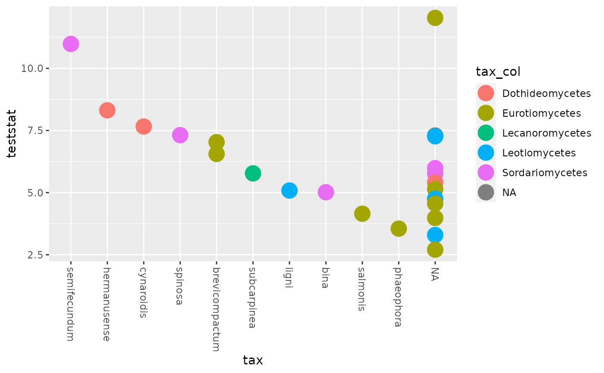
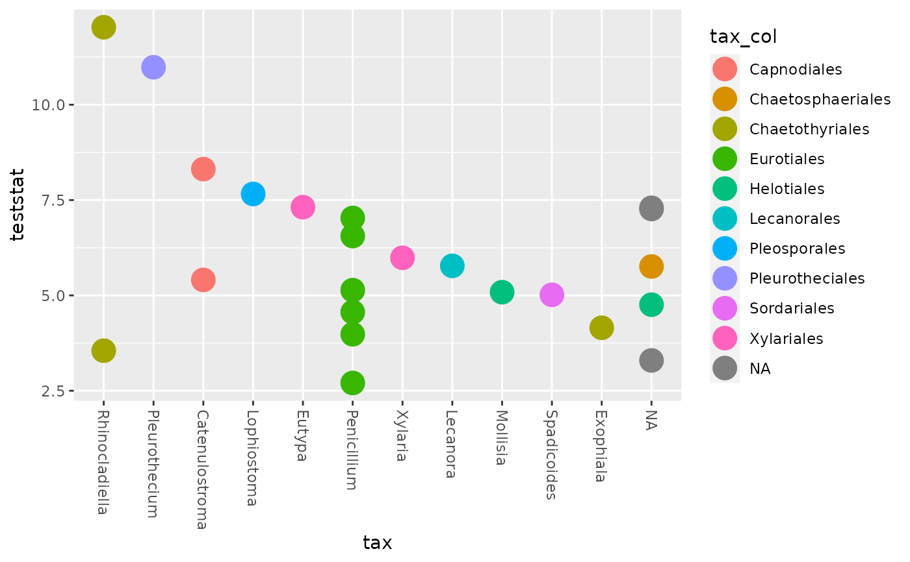

![[Maturing]](figures/lifecycle-maturing.svg)
Arguments
- mt
(required) Result of a mt test from the function
phyloseq::mt().- alpha
(default: 0.05) Choose the cut off p-value to plot taxa.
- color_tax
(default: "Class") A taxonomic level to color the points.
- taxa
(default: "Species") The taxonomic level you choose for x-positioning.
Value
a ggplot2 plot of result of a mt test
Examples
# Filter samples that don't have Enterotype
data_fungi <- subset_samples(data_fungi, !is.na(Time))
res <- mt(data_fungi, "Time", method = "fdr", test = "f", B = 300)
#> B=300
#> b=3 b=6 b=9 b=12 b=15 b=18 b=21 b=24 b=27 b=30
#> b=33 b=36 b=39 b=42 b=45 b=48 b=51 b=54 b=57 b=60
#> b=63 b=66 b=69 b=72 b=75 b=78 b=81 b=84 b=87 b=90
#> b=93 b=96 b=99 b=102 b=105 b=108 b=111 b=114 b=117 b=120
#> b=123 b=126 b=129 b=132 b=135 b=138 b=141 b=144 b=147 b=150
#> b=153 b=156 b=159 b=162 b=165 b=168 b=171 b=174 b=177 b=180
#> b=183 b=186 b=189 b=192 b=195 b=198 b=201 b=204 b=207 b=210
#> b=213 b=216 b=219 b=222 b=225 b=228 b=231 b=234 b=237 b=240
#> b=243 b=246 b=249 b=252 b=255 b=258 b=261 b=264 b=267 b=270
#> b=273 b=276 b=279 b=282 b=285 b=288 b=291 b=294 b=297 b=300
#> r=14 r=28 r=42 r=56 r=70 r=84 r=98 r=112 r=126 r=140
#> r=154 r=168 r=182 r=196 r=210 r=224 r=238 r=252 r=266 r=280
#> r=294 r=308 r=322 r=336 r=350 r=364 r=378 r=392 r=406 r=420
#> r=434 r=448 r=462 r=476 r=490 r=504 r=518 r=532 r=546 r=560
#> r=574 r=588 r=602 r=616 r=630 r=644 r=658 r=672 r=686 r=700
#> r=714 r=728 r=742 r=756 r=770 r=784 r=798 r=812 r=826 r=840
#> r=854 r=868 r=882 r=896 r=910 r=924 r=938 r=952 r=966 r=980
#> r=994 r=1008 r=1022 r=1036 r=1050 r=1064 r=1078 r=1092 r=1106 r=1120
#> r=1134 r=1148 r=1162 r=1176 r=1190 r=1204 r=1218 r=1232 r=1246 r=1260
#> r=1274 r=1288 r=1302 r=1316 r=1330 r=1344 r=1358 r=1372 r=1386 r=1400
#> r=1414
plot_mt(res)
#> Warning: invalid factor level, NA generated
#> Warning: Removed 27 rows containing missing values (`geom_point()`).

# \donttest{
plot_mt(res, taxa = "Genus", color_tax = "Order")
#> Warning: invalid factor level, NA generated
#> Warning: Removed 27 rows containing missing values (`geom_point()`).

# }